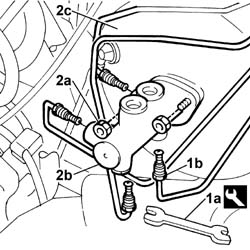

3330C10 (PUMP) - MASTER CYLINDER R.R.
- Path
- Procedures > 33 BRAKES > 3330 HYDRAULIC BRAKE SYSTEM > 3330C BRAKE PUMP, RESERVOIR AND LOAD PROPORTIONING VALVE > 3330C10 (PUMP) - MASTER CYLINDER R.R.
- Kind
- repair procedure (removal / refitting; the operation number is the code)
- Applies to
- engines: 1.2 8v, 1.6 16v, 1.3 JTD 16V, 1.9 JTD 8V, 1.9 DIESEL; all production periods
- Interactive page
- https://sloeber94.github.io/elrnDB-fDbl/en/#/2584655
Applies to: engines: 1.2 8v, 1.6 16v, 1.3 JTD 16V, 1.9 JTD 8V, 1.9 DIESEL; all production periods
 Removing
Removing
 Refitting
RefittingOpen the bonnet.
Op. 5530B52 BATTERY SUPPORT/DRIP TRAY - R.R..
Op. 3330C40 BRAKE FLUID RESERVOIR CAP - R + R.
Op. 3330C30 BRAKE FLUID RESERVOIR - R + R AND WASH INSIDE.
1. Use wrench (1a) to disconnect brake pipe fittings(1b) from the master cylinder.
 | Name | Country |
|---|---|---|
1a | Box wrench for brake fittings | 1.856.132.000 |
2. Undo both nuts (2a) securing master cylinder (2b) and withdraw from brake servo (2c).

Applies to: engines: 1.2 8v, 1.6 16v, 1.3 JTD 16V, 1.9 JTD 8V, 1.9 DIESEL; all production periods
Refitting
RemovingRefit the master cylinder and secure by tightening nuts to the specified torque.
 | Fastening | Component | Ø | Value (daNm) |
|---|---|---|---|---|
- | Nut | BRAKE MASTER CYLINDER (PUMP) | - | 2.5 ± 0.4 |
Connect the brake line connectors to the master cylinder using the appropriate wrench.
| Name | Country |
|---|---|---|
- | Box wrench for brake fittings | 1.856.132.000 |
| Fastening | Component | Ø | Value (daNm) |
|---|---|---|---|---|
- | Connector | RIGID PIPE TO FRONT BRAKES | M10 x 1 | 1.4 |
Op. 3330C30 BRAKE FLUID RESERVOIR - R + R AND WASH INSIDE.
Op. 0010T64 BRAKE AND/OR CLUTCH FLUID CHECK LEVEL AND TOP UP AS NECESSARY.
Op. 0010T65 HYDRAULIC BRAKE SYSTEM - BLEED AIR.
Op. 3330C40 BRAKE FLUID RESERVOIR CAP - R + R.
Op. 5530B52 BATTERY SUPPORT/DRIP TRAY - R.R..
Close the bonnet lid.
Topics linked from this page (6)
- 0010T64 brake and or clutch fluid check level and top up as necessary
- 0010T65 hydraulic brake system bleed air
- 3330C30 brake fluid reservoir - r + r and wash inside
- 3330C40 brake fluid reservoir plug - r + r
- 5530B10 battery - r+r
- 5530B52 Battery DRIP TRAY/SUPPORT - R.R.